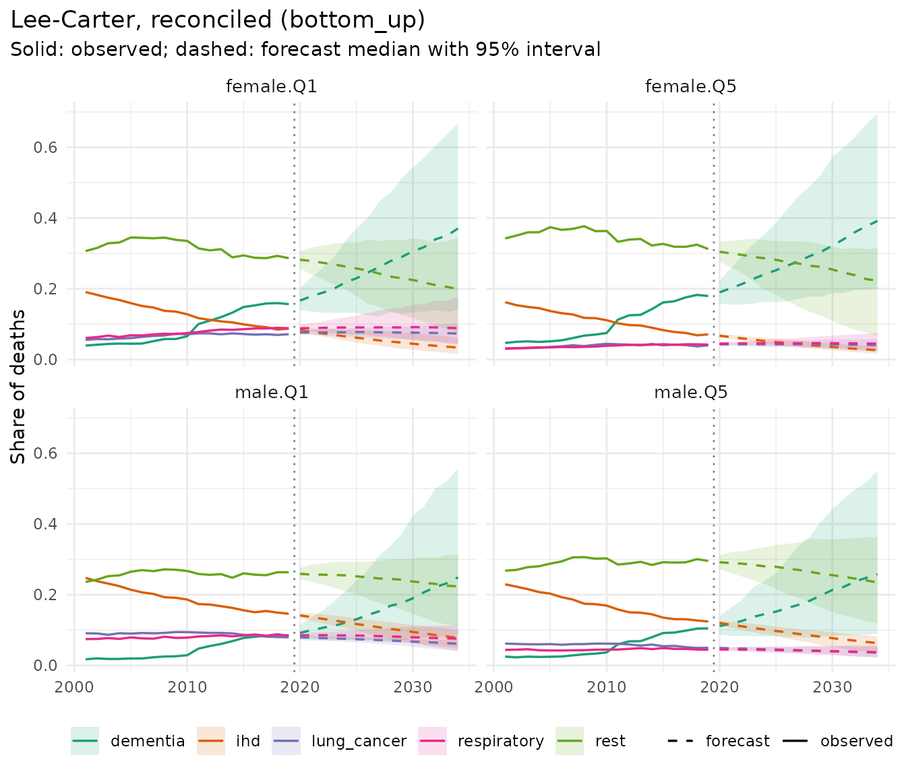

Forecasting causes of death one at a time gives cause-specific forecasts that do not add up to the all-cause forecast. mortensor offers three ways to coherent cause-specific forecasts:
-
bottom-up: separate models per cause, with all
causes as their sum
(
reconciled(..., method = "bottom_up")); -
reconciliation: separate models for every cause and
for all causes, projected draw by draw so that they add up
(
method = "wls","mint", …); -
cause shares: all-cause mortality with any model,
and the shares of the causes with a compositional tensor model
(
cause_shares()).
This vignette compares them on deaths by cause and deprivation in
England, 2001-2019 (ons_data; Source: Office for National
Statistics licensed under the Open Government Licence v3.0).
Cause groups
The workbook has 29 causes, defined by mutually exclusive ICD-10
codes. Several are rare, so cells by sex, quintile, 5-year age group and
year would often hold a handful of deaths. ons_cause_groups
keeps the common cancers and causes separate and combines small causes
within their ICD-10 chapter. The analysis starts at age 50, where the
groups have enough deaths in almost every cell (dementia and diabetes
are sparse below 50).
The deaths of ons_data are in wide format, one column
per cause. mt_data() reads them by listing the cause
columns as the levels of the stratum variable cause (the
all-cause column is named "all"); the populations have no
cause and are shared by all causes. mt_subset() keeps ages
50 and over, and mt_group_levels() combines the causes.
With total = "all" and other = "rest", the
rest is all causes minus the groups, so it also holds deaths from causes
the table does not list (including suicide).
str(ons_cause_groups)
#> List of 11
#> $ lung_cancer : chr "lung_cancer"
#> $ colorectal_cancer: chr "colorectal_cancer"
#> $ breast_prostate : chr [1:2] "breast_cancer" "prostate_cancer"
#> $ other_cancers : chr "all_other_cancers"
#> $ ihd : chr "chronic_ischaemic_heart_disease"
#> $ stroke : chr "stroke_incl_transient_ischaemic_attack"
#> $ other_circulatory: chr [1:3] "heart_failure" "hypertension" "atrial_fibrillation"
#> $ dementia : chr "dementia"
#> $ respiratory : chr [1:2] "copd" "asthma"
#> $ diabetes : chr [1:3] "type_1_diabetes" "type_2_diabetes" "diabetes_other"
#> $ liver_alcohol : chr [1:3] "alcohol_related_liver_disease" "non_alcohol_related_liver_disease" "alcohol_specific"
causes <- names(ons_data)[-(1:7)]
xc <- mt_data(deaths = ons_data, population = ons_data, by = c("sex", "imd_decile", "cause"),
age = "age_group", value = list(deaths = c(all = "all_causes", causes), population = "population"))
xc <- mt_as_exposure(xc, type = "midyear")
xc <- mt_subset(xc, ages = c(50, Inf))
xc <- mt_group_levels(xc, "imd_decile", function(d) paste0("Q", ceiling(as.numeric(d) / 2)), name = "quintile")
xc <- mt_group_levels(xc, "cause", ons_cause_groups, other = "rest", total = "all", additive = "rates")
xc
#> <mt_data> 130 strata by sex, quintile, cause, omega = 110
#> deaths 5-year groups 50-89, 90+; periods 2001-2019 (width 1); 22230 cells
#> exposure 5-year groups 50-89, 90+; periods 2001-2019 (width 1); 22230 cells
#> population 5-year groups 50-89, 90+; periods 2001-2019 (width 1); 22230 cells
#> grid <mt_axis: age, 9 intervals> 50-54 55-59 60-64 65-69 ... 80-84 85-89 90+
#> <mt_axis: period, 19 intervals> 2001 2002 2003 2004 ... 2017 2018 2019Breast and prostate cancer form one group, the sex-specific cancer of each sex (for men it also contains the few male breast cancers), so that both sexes have the same causes.
Causes share the exposure of their stratum, so their
rates add up to the all-cause rate. The hierarchy says
so with additive = "rates", and mt_validate()
checks the sums:
h <- mt_hierarchy(cause = "all", additive = "rates")
mt_validate(xc, hierarchy = h)
#> <mt_validation> 1 finding(s): 0 error, 0 warning, 1 info
#> [info] hierarchy (deaths,exposure, 10 aggregate strata, n = 0): sums of parts agree with the totals within toleranceInequality by cause
Age-standardised death rates at ages 50 and over (European Standard Population 2013) per cause and quintile, and the ratio between the most and the least deprived quintile, 2017-2019:
obs <- asr(mt_subset(xc, periods = c(2017, 2019)))[, .(asr = mean(q0.5)), by = .(sex, quintile, cause)]
ratio <- dcast(obs[quintile %in% c("Q1", "Q5")], sex + cause ~ quintile, value.var = "asr")
ratio[, `Q1 / Q5` := round(Q1 / Q5, 2)]
ratio[, c("Q1", "Q5") := lapply(.SD, round), .SDcols = c("Q1", "Q5")]
ratio[order(sex, -`Q1 / Q5`)]
#> sex cause Q1 Q5 Q1 / Q5
#> <char> <char> <num> <num> <num>
#> 1: female respiratory 249 70 3.56
#> 2: female lung_cancer 203 69 2.95
#> 3: female liver_alcohol 59 21 2.76
#> 4: female diabetes 36 15 2.43
#> 5: female ihd 240 114 2.11
#> 6: female all 2700 1613 1.67
#> 7: female other_circulatory 120 79 1.52
#> 8: female rest 766 503 1.52
#> 9: female dementia 403 273 1.48
#> 10: female stroke 129 88 1.47
#> 11: female other_cancers 354 260 1.36
#> 12: female colorectal_cancer 58 49 1.18
#> 13: female breast_prostate 82 73 1.13
#> 14: male liver_alcohol 124 37 3.39
#> 15: male respiratory 307 96 3.19
#> 16: male lung_cancer 273 103 2.66
#> 17: male diabetes 49 21 2.32
#> 18: male ihd 521 269 1.94
#> 19: male all 3612 2135 1.69
#> 20: male stroke 140 90 1.56
#> 21: male dementia 357 230 1.55
#> 22: male rest 976 647 1.51
#> 23: male other_circulatory 129 88 1.46
#> 24: male other_cancers 514 372 1.38
#> 25: male colorectal_cancer 95 70 1.35
#> 26: male breast_prostate 126 112 1.12
#> sex cause Q1 Q5 Q1 / Q5
#> <char> <char> <num> <num> <num>The gradient is steepest for chronic lower respiratory disease, lung cancer, liver disease and alcohol, and diabetes, and flattest for the sex-specific cancers and colorectal cancer.
Three approaches in a backtest
Forecasts from the origins 2008, 2011 and 2014 are scored on the following five years, separately for the causes and for all causes:
specs <- list(
reconciled(lee_carter(), h, method = "bottom_up"),
reconciled(lee_carter(), h, method = "wls"),
reconciled(li_lee(common_by = c("sex", "cause")), h, method = "bottom_up"),
cause_shares(total = li_lee(common_by = "sex"), ranks = c(5, 4, 6, 8)),
lee_carter())
bt <- rbindlist(lapply(specs, function(sp) {
b <- mt_backtest(sp, xc, origins = c(2008, 2011, 2014), h = 5, n_draws = 200)
b[, level := ifelse(cause == "all", "all causes", "causes")]
}))
#> Warning in reconcile_array(arr, rc$structure, rc$hierarchy$additive, rc$method,
#> : In 66% of the draws some bottom forecasts were set to zero to keep the
#> aggregates; their distributions are truncated. Check the base forecasts
#> (mt_coherence()) or use method = "proportional" with fixed nodes.
#> Warning in reconcile_array(arr, rc$structure, rc$hierarchy$additive, rc$method,
#> : In 18% of the draws some bottom forecasts were set to zero to keep the
#> aggregates; their distributions are truncated. Check the base forecasts
#> (mt_coherence()) or use method = "proportional" with fixed nodes.
sc <- bt[, .(crps = round(mean(crps), 4), cov50 = round(mean(cov50), 2), cov95 = round(mean(cov95), 2)),
by = .(model, level)]
dcast(sc, model ~ level, value.var = c("crps", "cov95"))
#> Key: <model>
#> model crps_all causes
#> <char> <num>
#> 1: Cause shares (Li-Lee (common by sex)) 0.0448
#> 2: Lee-Carter 0.0409
#> 3: Lee-Carter, reconciled (bottom_up) 0.0353
#> 4: Lee-Carter, reconciled (wls) 0.0381
#> 5: Li-Lee (common by sex, cause), reconciled (bottom_up) 0.0407
#> crps_causes cov95_all causes cov95_causes
#> <num> <num> <num>
#> 1: 0.1521 0.77 0.97
#> 2: 0.1147 0.75 0.86
#> 3: 0.1148 0.78 0.86
#> 4: 0.1160 0.73 0.86
#> 5: 0.1127 0.71 0.87The last row, separate Lee-Carter models without reconciliation, is not coherent: its all-cause forecasts come from a model of their own. On these data, five years ahead, the bottom-up sum of separate Lee-Carter models is coherent and forecasts all causes more accurately than a model of all-cause mortality itself: the trends of the causes differ (ischaemic heart disease fell much faster than the rest), and their sum follows the changing composition. Li-Lee with one common trend per sex and cause, also summed bottom-up, is slightly more accurate for the single causes and less accurate for all causes. The cause-share model is clearly less accurate here: it describes the composition through a few factors shared by ages, years, groups and causes, which these data, with large counts and diverse cause trends, do not need. The 95% intervals of all approaches are too narrow for all causes (see “Frequently asked questions” on interval calibration). WLS reconciliation of separate models warns that it sets some causes to zero in many draws: in those paths the separate all-cause model lies far below the sum of the causes.
Forecasts
Forecasts to 2034 with the bottom-up approach:
fit <- mt_fit(reconciled(lee_carter(), h, method = "bottom_up"), xc)
fc <- mt_forecast(fit, h = 15, n_draws = 500, seed = 1)
#> Warning in check_draws_plausible(arr, fit$age, fit$strata, spec$label):
#> Lee-Carter: forecast death rates above 1 in 1.0% of the draws (strata
#> female.Q1.dementia, male.Q1.dementia, male.Q2.dementia; ages 90+). The model is
#> unstable here, often because of sparse counts or a steep trend extrapolated far
#> ahead; consider wider age groups (mt_regroup()), pooling (li_lee(common_by =
#> )), smoothing (step_smooth()) or an ensemble.
fc$reconciliation
#> $method
#> [1] "bottom_up"
#>
#> $max_relative_gap_before
#> [1] 0.8730635
#>
#> $share_set_to_zero
#> [1] 0
#>
#> $mean_shrinkage
#> [1] NA
#>
#> $share_draws_with_zeros
#> [1] 0
#>
#> $max_relative_change_fixed
#> [1] NA
mt_plot_shares(fc, groups = c("female.Q1", "female.Q5", "male.Q1", "male.Q5"),
causes = c("ihd", "dementia", "lung_cancer", "respiratory", "rest"))
Dementia deaths rose steeply between 2001 and 2019. Separate models per stratum extrapolate that rise for 15 years, which makes dementia the largest group by 2034 with very wide intervals. Whether such a trend continues is a substantive question (recorded trends of single causes can reflect changes in diagnosis, certification and coding as well as in risk), and the forecast should be read as a conditional statement.
What the cause forecasts imply for all causes is the first thing to
check. Life expectancy at 50 in 2034 from the sum of the cause models,
against Lee-Carter and Li-Lee fitted to all causes directly
(mt_coherence() on unreconciled forecasts shows the same
gap as a ratio):
xa <- mt_subset(xc, strata = cause == "all")
fc_all <- list("Lee-Carter on all causes" = mt_forecast(mt_fit(lee_carter(), xa), h = 15, n_draws = 500, seed = 1),
"Li-Lee on all causes" = mt_forecast(mt_fit(li_lee(common_by = "sex"), xa), h = 15, n_draws = 500,
seed = 1))
e50 <- rbind(life_expectancy(fc, at = 50)[cause == "all"][, approach := "Lee-Carter by cause, summed"],
rbindlist(lapply(names(fc_all), function(n) life_expectancy(fc_all[[n]], at = 50)[, approach := n])))
obs50 <- life_expectancy(mt_subset(xa, periods = c(2019, 2019)), at = 50)[, .(sex, quintile, observed_2019 = q0.5)]
merge(obs50, dcast(e50[period == 2034, .(sex, quintile, approach, e50 = sprintf("%.1f (%.1f-%.1f)", q0.5, q0.025,
q0.975))],
sex + quintile ~ approach, value.var = "e50"), by = c("sex", "quintile"))[
quintile %in% c("Q1", "Q5")]
#> Key: <sex, quintile>
#> sex quintile observed_2019 Lee-Carter by cause, summed
#> <char> <char> <num> <char>
#> 1: female Q1 31.69435 30.8 (29.1-32.8)
#> 2: female Q5 37.25979 37.3 (34.7-40.2)
#> 3: male Q1 28.33531 29.0 (27.4-30.6)
#> 4: male Q5 34.47609 35.7 (33.6-37.4)
#> Lee-Carter on all causes Li-Lee on all causes
#> <char> <char>
#> 1: 32.9 (30.4-35.7) 34.3 (30.9-37.9)
#> 2: 39.8 (37.6-41.9) 38.5 (36.1-41.4)
#> 3: 30.6 (29.0-32.2) 31.7 (30.0-33.7)
#> 4: 37.1 (35.8-38.4) 36.7 (35.4-38.2)The sum of the cause models forecasts much smaller gains in life
expectancy at 50 by 2034 than the models of all causes, and a fall for
women in Q1 (from 31.7 to 30.8 years). The warning of
mt_forecast() above points the same way: in some draws the
dementia rates at 90+ exceed 1 by 2034. Sums of cause-specific
extrapolations are dominated by the causes that fall slowest or rise
(here dementia), so forecasts by cause tend to be more pessimistic than
forecasts of all causes (Wilmoth 1995). The five-year backtest above
cannot detect this: it rewards the cause models for the recent past and
says nothing about fifteen years of compounding cause trends. For long
horizons, reconcile the causes to a forecast of all causes, as below,
and report both.
Age-standardised rates and the ratio Q1 / Q5, path by path, so that the intervals of the ratio include the joint uncertainty of both quintiles:
rr <- mt_contrast(fc, var = "quintile", ref = "Q5", quantity = "asr", type = "ratio")[level == "Q1" & period == 2034]
rr <- rr[, .(sex, cause, q0.025 = round(q0.025, 2), q0.5 = round(q0.5, 2), q0.975 = round(q0.975, 2))]
merge(rr, ratio[, .(sex, cause, `2017-2019` = `Q1 / Q5`)], by = c("sex", "cause"))[order(sex, -q0.5)]
#> sex cause q0.025 q0.5 q0.975 2017-2019
#> <char> <char> <num> <num> <num> <num>
#> 1: female respiratory 2.36 4.12 6.71 3.56
#> 2: female lung_cancer 2.73 3.50 4.99 2.95
#> 3: female diabetes 1.81 3.35 8.55 2.43
#> 4: female liver_alcohol 1.23 3.05 6.93 2.76
#> 5: female ihd 1.62 2.63 3.96 2.11
#> 6: female all 1.32 2.07 2.85 1.67
#> 7: female dementia 0.54 2.00 5.12 1.48
#> 8: female rest 1.21 1.93 3.22 1.52
#> 9: female stroke 1.33 1.79 2.54 1.47
#> 10: female other_circulatory 0.90 1.71 2.96 1.52
#> 11: female other_cancers 1.21 1.39 1.75 1.36
#> 12: female breast_prostate 0.93 1.31 1.80 1.13
#> 13: female colorectal_cancer 0.81 1.21 2.14 1.18
#> 14: male respiratory 2.72 3.88 5.07 3.19
#> 15: male lung_cancer 2.37 3.03 3.96 2.66
#> 16: male liver_alcohol 1.73 2.80 5.34 3.39
#> 17: male diabetes 1.18 2.75 6.23 2.32
#> 18: male ihd 1.76 2.21 2.97 1.94
#> 19: male dementia 0.37 2.06 9.05 1.55
#> 20: male all 1.28 1.93 3.03 1.69
#> 21: male rest 1.28 1.73 2.37 1.51
#> 22: male other_circulatory 0.76 1.68 4.24 1.46
#> 23: male stroke 0.99 1.65 3.00 1.56
#> 24: male breast_prostate 1.16 1.41 1.83 1.12
#> 25: male other_cancers 1.16 1.41 1.57 1.38
#> 26: male colorectal_cancer 0.93 1.33 2.03 1.35
#> sex cause q0.025 q0.5 q0.975 2017-2019
#> <char> <char> <num> <num> <num> <num>Separate models per stratum extrapolate each quintile’s own trend, so the ratios continue the recent changes of the gradient, with wide intervals. Li-Lee with a common trend per sex and cause lets the quintiles deviate from that trend only through stationary processes, which keeps the ratios close to their average over the training years:
fc_ll <- mt_forecast(mt_fit(specs[[3]], xc), h = 15, n_draws = 500, seed = 1)
#> Warning in check_draws_plausible(arr, fit$age, fit$strata, spec$label): Li-Lee
#> (common by sex, cause): forecast death rates above 1 in 0.2% of the draws
#> (strata female.Q1.dementia, female.Q2.dementia; ages 90+). The model is
#> unstable here, often because of sparse counts or a steep trend extrapolated far
#> ahead; consider wider age groups (mt_regroup()), pooling (li_lee(common_by =
#> )), smoothing (step_smooth()) or an ensemble.
rr_ll <- mt_contrast(fc_ll, var = "quintile", ref = "Q5", quantity = "asr", type = "ratio")[level == "Q1" &
period == 2034]
merge(rr[, .(sex, cause, lee_carter = q0.5)], rr_ll[, .(sex, cause, li_lee = round(q0.5, 2))],
by = c("sex", "cause"))[order(sex, -lee_carter)]
#> sex cause lee_carter li_lee
#> <char> <char> <num> <num>
#> 1: female respiratory 4.12 2.93
#> 2: female lung_cancer 3.50 2.51
#> 3: female diabetes 3.35 1.98
#> 4: female liver_alcohol 3.05 2.58
#> 5: female ihd 2.63 1.95
#> 6: female all 2.07 1.48
#> 7: female dementia 2.00 1.28
#> 8: female rest 1.93 1.40
#> 9: female stroke 1.79 1.30
#> 10: female other_circulatory 1.71 1.40
#> 11: female other_cancers 1.39 1.27
#> 12: female breast_prostate 1.31 1.06
#> 13: female colorectal_cancer 1.21 1.12
#> 14: male respiratory 3.88 2.72
#> 15: male lung_cancer 3.03 2.38
#> 16: male liver_alcohol 2.80 3.52
#> 17: male diabetes 2.75 1.99
#> 18: male ihd 2.21 1.75
#> 19: male dementia 2.06 1.36
#> 20: male all 1.93 1.52
#> 21: male rest 1.73 1.46
#> 22: male other_circulatory 1.68 1.39
#> 23: male stroke 1.65 1.48
#> 24: male breast_prostate 1.41 0.96
#> 25: male other_cancers 1.41 1.32
#> 26: male colorectal_cancer 1.33 1.28
#> sex cause lee_carter li_lee
#> <char> <char> <num> <num>When the forecast of all causes is trusted more than the sum of the
causes, the causes can be reconciled to it: fixed = "total"
keeps the strata of the total level, here all causes in every sex and
quintile. method = "proportional" then scales the causes of
each stratum in proportion to their own forecasts, draw by draw, so that
they add up to it; the projection methods ("wls" and
others) instead move the causes with the most variable forecasts, and
set causes to zero where the gap is large:
fc_fx <- mt_forecast(mt_fit(reconciled(lee_carter(), h, method = "proportional", fixed = "total"), xc), h = 15,
n_draws = 200, seed = 1)
#> Warning in check_draws_plausible(arr, fit$age, fit$strata, spec$label):
#> Lee-Carter: forecast death rates above 1 in 1.5% of the draws (strata
#> male.Q1.dementia, male.Q4.dementia; ages 90+). The model is unstable here,
#> often because of sparse counts or a steep trend extrapolated far ahead;
#> consider wider age groups (mt_regroup()), pooling (li_lee(common_by = )),
#> smoothing (step_smooth()) or an ensemble.
fc_fx$reconciliation[c("max_relative_change_fixed", "share_set_to_zero")]
#> $max_relative_change_fixed
#> [1] 5.560493e-16
#>
#> $share_set_to_zero
#> [1] 0
a <- rbind(asr(fc)[, approach := "bottom-up"], asr(fc_fx)[, approach := "all causes fixed"])
dcast(a[period == 2034 & sex == "female" & cause %in% c("all", "ihd", "dementia", "lung_cancer"),
.(approach, quintile, cause, asr = round(q0.5))], quintile + cause ~ approach, value.var = "asr")
#> Key: <quintile, cause>
#> quintile cause all causes fixed bottom-up
#> <char> <char> <num> <num>
#> 1: Q1 all 2293 3273
#> 2: Q1 dementia 740 1142
#> 3: Q1 ihd 82 111
#> 4: Q1 lung_cancer 192 247
#> 5: Q2 all 1810 2339
#> 6: Q2 dementia 578 802
#> 7: Q2 ihd 56 77
#> 8: Q2 lung_cancer 127 156
#> 9: Q3 all 1558 2060
#> 10: Q3 dementia 549 752
#> 11: Q3 ihd 48 59
#> 12: Q3 lung_cancer 101 119
#> 13: Q4 all 1388 1838
#> 14: Q4 dementia 491 632
#> 15: Q4 ihd 39 52
#> 16: Q4 lung_cancer 85 104
#> 17: Q5 all 1152 1588
#> 18: Q5 dementia 405 608
#> 19: Q5 ihd 30 42
#> 20: Q5 lung_cancer 56 70
#> quintile cause all causes fixed bottom-up
#> <char> <char> <num> <num>The all-cause rates are now those of the all-cause model, and every cause is scaled by the same factor within a stratum and draw. This keeps the composition of the cause models and the level of the all-cause model; it does not tell which causes the all-cause model’s lower level should come from. A fixed total is a modelling decision that should be reported.
Which assumption is more plausible is a judgement the backtest cannot settle over five years. Deprivation deciles are also reclassified with each new IMD version (2007, 2010, 2015 and 2019 in these data), and cause coding changes over time, so trends of single causes in single quintiles deserve a critical look before they are extrapolated.
References
Wilmoth JR (1995). Are mortality projections always more pessimistic when disaggregated by cause of death? Mathematical Population Studies 5(4): 293-319. doi:10.1080/08898489509525409.